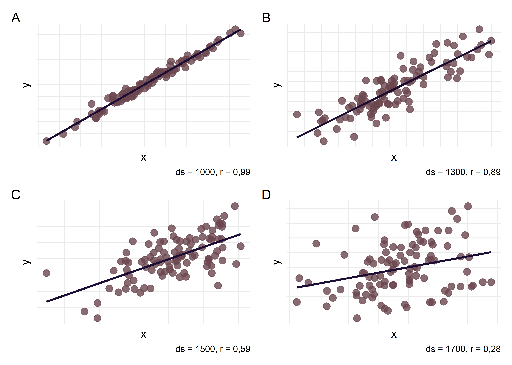
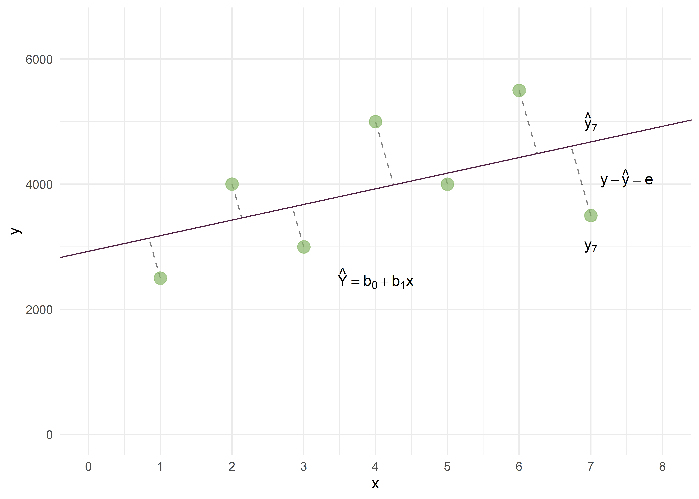
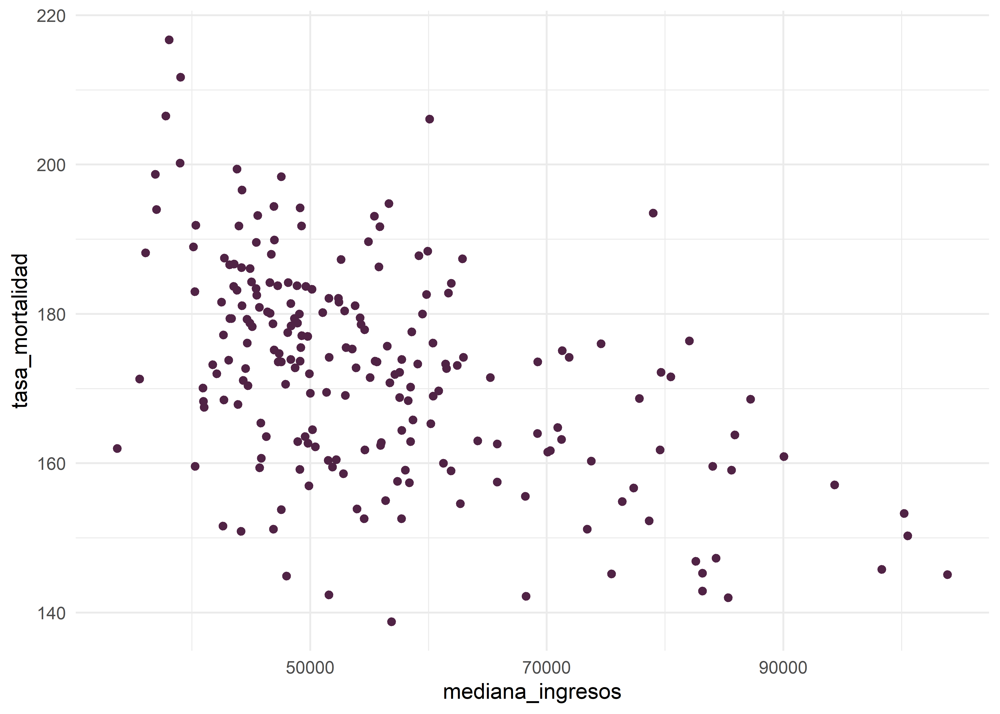
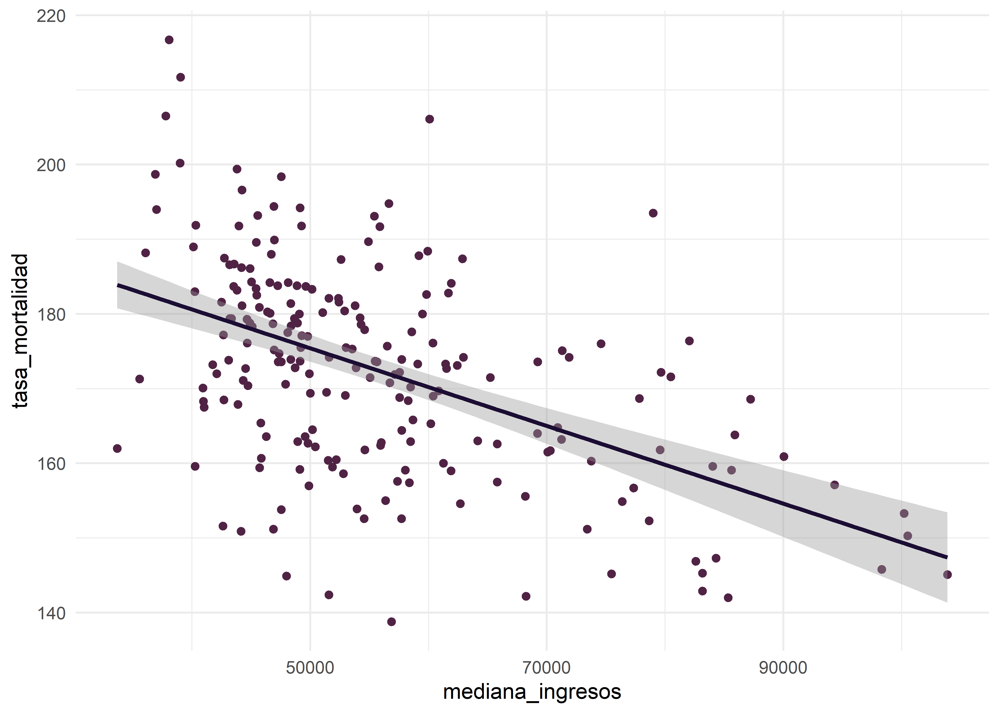
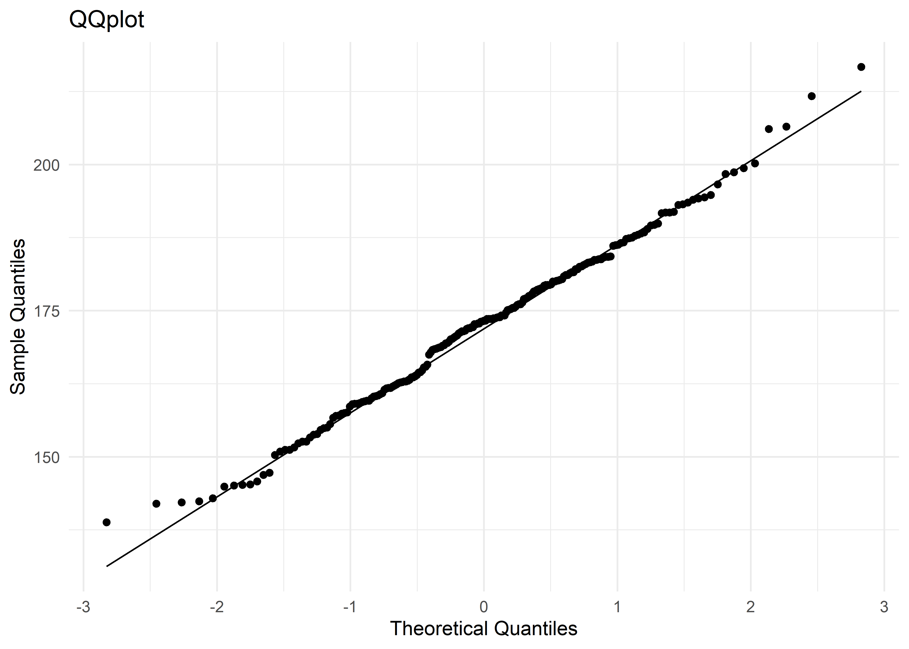
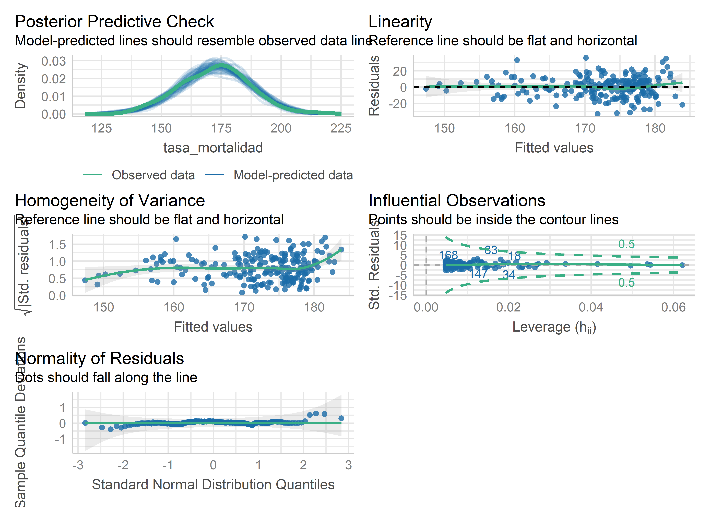
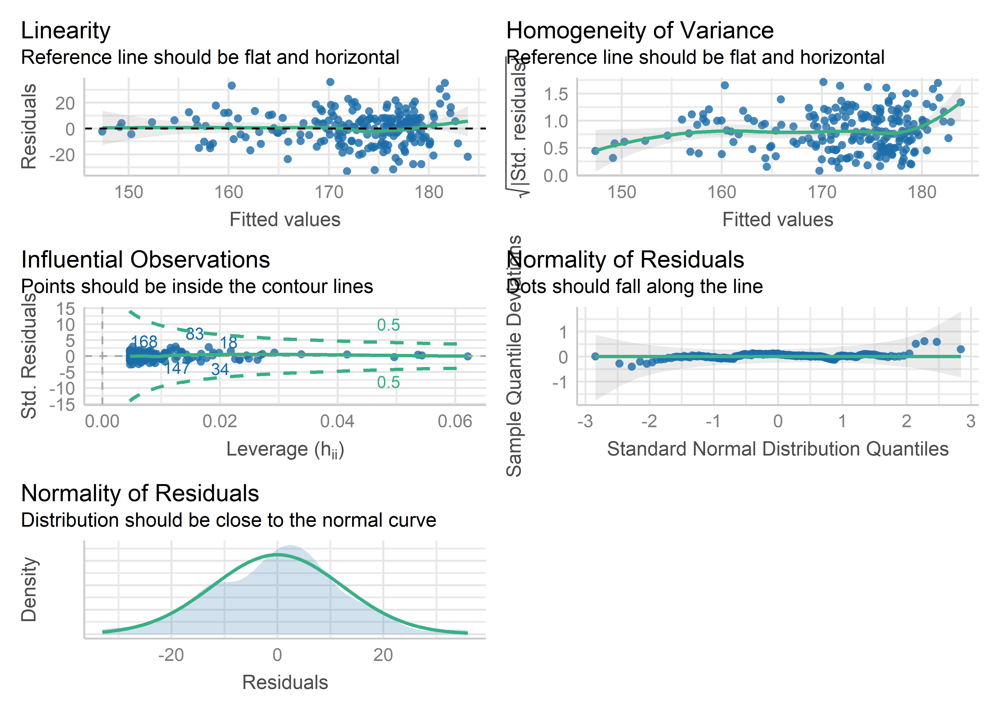
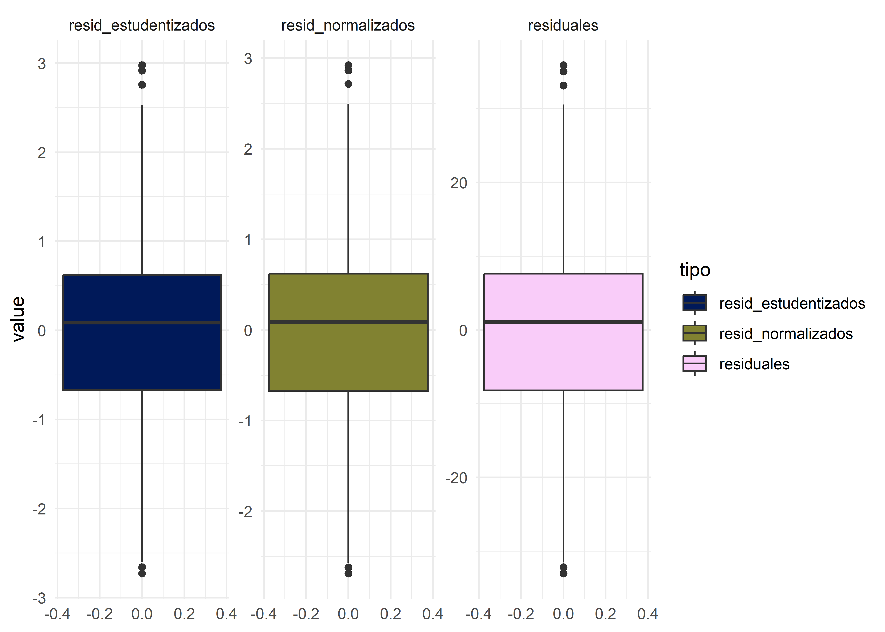
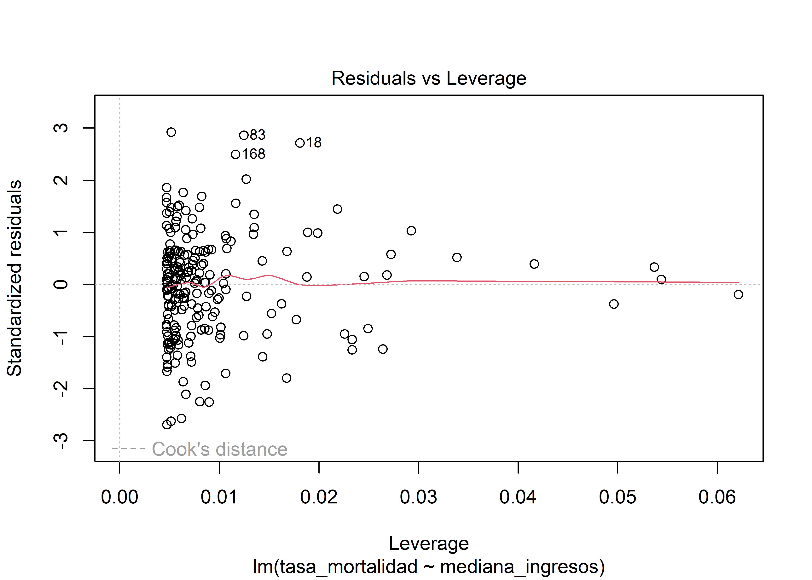

Regresión lineal simple
Christian Ballejo ![]()
Andrea Silva
Introducción
Para entender el modelo de regresión lineal simple, volvamos al ejemplo del peso en niñas menores de 6 meses de la unidad anterior, donde habíamos trazado una recta que nos ilustraba la relación lineal del peso en función de la edad.
Según el modelo estadístico para la función lineal de \(Y\) según \(X\):
\[ Y(X) = \beta_0 + \beta_1 + X_1 \]
Hemos ajustado un modelo cuyos parámetros son:
\[ \hat{y} = b_0 + b_1X_1 \] donde \(b_1\) nos está indicando cuánto se modifica \(\hat{y}\) por cada unidad de aumento de \(X_1\).
\[ \hat{y} = 2468,9 + 100,7 \: edad \: (en \: semanas) \]
Se interpreta que por cada semana este grupo de lactantes ha aumentado en promedio 100 gramos, o que cada 1 mes (4 semanas) aumentan una media de 400 gramos.
Podemos observar que hay una relación lineal y que esta relación no es perfecta. Existe cierta dispersión entre los puntos sugiriendo que alguna variación en el peso no se asocia con un incremento de la edad (por ejemplo dos lactantes de 15 semanas. Tienen la misma edad y 1.600 grs de diferencia. Cabría preguntarse si esas niñas que se “alejan” tanto de la recta de regresión no tienen algún antecedente distinto del resto). Más adelante veremos cómo se interpretan esas diferentes distancias entre las observaciones y la recta de regresión.
Ahora vamos a concentrarnos en la relación entre la varianza de la muestra, a través del desvío estándar (\(ds = \sqrt{varianza}\)) y la magnitud de la asociación. Se muestran cuatro ejemplos en los cuáles se fue aumentando progresivamente el desvío estándar de los datos. Observen cómo a medida que aumenta la variabilidad entre los individuos va disminuyendo el coeficiente de correlación y el coeficiente \(b_1\) (pendiente de la recta)
Podemos observar que cuanto mayor es la varianza en una muestra:
Mayor es la variabilidad de \(y\) en torno a la recta de regresión
Mayor es la imprecisión asociada a la estimativa de los parámetros de regresión
Presupuestos del modelo
Cuando planeamos realizar un análisis de regresión con un conjunto de datos es necesario saber que para que podamos plantearlo adecuadamente deben cumplirse ciertas condiciones, que llamaremos Presupuestos del modelo:
- Independencia: los valores de \(y\) deben ser independientes unos de otros
- Linealidad: la relación entre \(x\) e \(y\) debe ser una función lineal
- Homocedasticidad: la varianza de \(y\) debe mantenerse constante para los distintos valores de \(x\)
- Normalidad: \(y\) debe tener una distribución normal
¿Cómo se obtiene la recta de regresión? ¿Cómo se calculan los coeficientes de la regresión?
En el ejemplo del peso según edad en niñas menores de 6 meses, la idea es encontrar una función lineal (que gráficamente es una recta) que aplicada a los valores de \(x\) nos permita aproximar los valores de \(y\). La ecuación de la recta que describe la relación entre \(x\) e \(y\):
\[ \hat{y} = b_0 + b_1x \]
Por muy bueno que sea el modelo de regresión \(y\) e \(\hat{y}\) rara vez coincidirán.
Entonces podríamos pensar que la mejor recta que permita predecir (o aproximar) los valores de \(y\) en función de \(x\) es aquella que minimice estos errores residuales (que algunos serán en más y otros serán en menos).
Gráficamente:

donde:
\(\hat{y}\) es la ecuación de la “mejor” recta que puede trazarse entre estos puntos
\(b_0\) es la ordenada al origen o constante, también llamada alfa. Es el punto donde la recta de regresión corta al eje de ordenadas.
\(b_1\) es la pendiente de la recta (más adelante veremos cuál es la interpretación de estos coeficientes).
Consideremos qué pasa en el caso de la niña 7. Veamos las distancias para este punto.
\(y_7\) es el valor “real” del peso de la niña 7.
\(\hat{y}_7\) es el valor estimado de \(y\) que obtendremos a través de la regresión.
\(y – \hat{y} = e\) (residuo o error residual) es el desvío de \(y\) del valor ajustado \(\hat{y}\) en la ecuación de la regresión estimada.
Para poder operar con el valor de estos errores (ya que algunos tendrán valor positivo y otros valor negativo) se los eleva al cuadrado. Esta técnica se denomina “método de los mínimos cuadrados” y consiste en adoptar como estimativas de los parámetros de la regresión (o sea los coeficientes \(b_0\) y \(b_1\) y por ende la recta de regresión) los valores que minimizan la suma de los cuadrados de los residuos o error (SCE) para todas las observaciones de \(y\). Lo podemos expresar así:
\[ SCE = \sum{\hat{e}^2} = \sum{(y-\hat{y})^2} \]
Sabíamos que:
\[ \hat{y} = b_0 + b_1x \]
Entonces si reemplazamos:
\[ SCE = \sum_{i=1}^{i=n} (y_i-\hat{y}_i)^2 = \sum_{i=1}^{i=n}(y_i-(\hat{\beta}_0 + \hat{\beta}_1x_1))^2 \]
Es posible obtener los estimadores \(\beta_1\) y \(\beta_0\).
\[ \hat{\beta}_1 = \frac{\sum_{i=1}^{n}(x_i - \bar{x})(y_i - \bar{y})}{\sum_{i=1}^{n}(x_i-\bar{x})^2} = \frac{S_{xy}}{S_{xx}} \]
Otra fórmula para \(\beta_1\):
\[ \hat{\beta}_1 = \frac{\sum x_iy_i-\frac{\sum x_i \sum y_i}{n}}{\sum x_i^2 - \frac{(\sum x_i)^2}{n}} \]
\[ \hat{\beta}_0 = \bar{y} - \beta_1\bar{x} \]
El método de los mínimos cuadrados fue creado por Johann Carl Friedrich Gauss (1777-1855). Tiene además la ventaja que el promedio de los errores residuales = 0 y que para cada estimación, la varianza del error es mínima.
Test de hipótesis para \(\beta_1\) e Intervalo de Confianza 95%
Como siempre que trabajamos con una muestra, será necesario aplicar los procesos de inferencia. Es por eso que los softwares ofrecen un test de hipótesis para el coeficiente.
La hipótesis nula podría entenderse como que \(x\) no logra explicar la variación de \(y\) (entonces la pendiente de la recta sería nula)
\[ H_0: \beta_1 = 0 \]
Al calcular el modelo de regresión, todos los softwares estiman el coeficiente y el error estándar del mismo (se) y testean el coeficiente.
Bondad de ajuste
Hasta ahora hemos aprendido a explicar la variación de \(y\) según la variación de \(x\) mediante un modelo en donde las desviaciones entre el valor observado (“real”) y el estimado (“modelo de regresión”) son las menores posibles.
Ahora debemos saber, según los datos que tenemos, cuán bueno es el modelo que ajustamos (qué capacidad tiene de explicar la variabilidad de \(y\) o, si lo quiero utilizar para realizar una predicción, cuánto se alejará mi valor estimado del verdadero, “real” valor de \(y\)). Esta evaluación la realizaremos mediante la descomposición de la varianza del modelo. Por definición la varianza o variabilidad total es la sumatoria de la diferencia entre cada valor de \(y\) con el promedio de \(y\) (elevado al cuadrado ya que hay valores negativos y positivos que si los sumamos se anularían).
La variabilidad total del modelo es la suma entre la variabilidad que logró explicar la regresión y la variabilidad residual.
\[ \sum (y_i-\bar{y})^2 = \sum (\hat{y}-\bar{y})^2 + \sum (y_i -\hat{y}_i)^2 \]
\[ \frac{Suma \; de \; cuadrados}{totales \; (SCT)} \; \frac{Suma \; de \; cuadrados}{de \; la \; regresion \; (SCR)} \; \frac{Suma \; de \; cuadrados}{residuales \; (SCE)} \]
Cuanto mayor sea la variabilidad que logre explicar la regresión en relación a los residuos, tanto mejor será el modelo. Este es el fundamento para el cálculo del coeficiente de determinación (\(R^2\))
\[ R^2 = \frac{SCR}{SCT} = 1 - \frac{SCE}{SCT} \]
\(R^2\) expresa la proporción de la variación total que logra explicar el modelo de regresión. Su valor oscila entre 0 y 1, es una cantidad adimensional.
Cuando el ajuste es bueno \(R^2\) será cercano a 1, cuando el ajuste es malo \(R^2\) será cercano a 0.
En la Regresión lineal simple el coeficiente de determinación (\(R^2\)) es igual al \(r\) de Pearson elevado al cuadrado.
Para visualizar simulaciones al respecto pueden visitar Viendo la teoría. Una introducción visual a probabilidad y estadística.
Ejemplo práctico en R
Para llevar a cabo el análisis en R y presentar las funciones y paquetes que nos pueden ayudar en la tarea vamos a trabajar con el set de datos cancer_USA.txt que utilizamos para el ejemplo de covarianza y correlación.
Comenzaremos por cargar los paquetes necesarios para el análisis:
Cargamos los datos y revisamos la estructura de la tabla:
Rows: 213
Columns: 10
$ condado <chr> "Belknap County", "Carroll County", "Cheshire Count…
$ estado <chr> "New Hampshire", "New Hampshire", "New Hampshire", …
$ tasa_mortalidad <dbl> 182.6, 168.8, 162.8, 181.6, 155.0, 163.2, 173.1, 17…
$ mediana_edad <dbl> 46.1, 50.3, 42.0, 48.1, 41.9, 40.1, 42.6, 43.5, 37.…
$ mediana_edad_cat <chr> "45+ años", "45+ años", "36-39 años", "45+ años", "…
$ mediana_ingresos <dbl> 59831, 57556, 56008, 42491, 56353, 71233, 62429, 79…
$ pct_pobreza <dbl> 10.0, 10.7, 11.8, 14.9, 11.6, 8.7, 9.5, 6.1, 11.8, …
$ pct_salud_publica <dbl> 16.8, 13.4, 12.7, 22.5, 14.0, 12.7, 13.1, 9.0, 12.4…
$ pct_sec_incompleta <dbl> 15.4, 14.8, 6.1, 13.2, 6.6, 12.9, 10.9, 13.5, 6.1, …
$ pct_desempleo <dbl> 5.3, 5.8, 6.1, 6.9, 5.0, 5.9, 5.2, 5.6, 6.5, 5.8, 1…Recordemos que la base de datos tiene 213 observaciones y 10 variables y la variable dependiente es tasa_mortalidad. Para ejemplificar los pasos de una regresión lineal simple, evaluaremos la asociación entre la variable dependiente y mediana_ingresos.
Presupuestos
Para que un modelo lineal sea válido, debe cumplir con cuatro supuestos fundamentales: independencia, linealidad, homocedasticidad y normalidad. Aunque la verificación rigurosa de estos criterios suele realizarse a partir del análisis de residuos tras ajustar el modelo, es recomendable realizar una evaluación preliminar de los datos para identificar posibles problemas desde el inicio.
La independencia (o ausencia de autocorrelación) puede determinarse, en gran medida, a partir del conocimiento sobre la fuente de los datos y su método de recolección. Sin embargo, siempre es recomendable verificarla en los residuales del modelo.
La linealidad se refiere a la relación entre las variables tasa_mortalidad y mediana_ingresos. Para comprobarla, se puede utilizar un diagrama de dispersión:
datos |>
ggplot(mapping = aes(x = mediana_ingresos, y = tasa_mortalidad)) +
# gráfico de dispersión
geom_point(color = "#502345") +
# tema
theme_minimal()
Observamos en el gráfico una clara relación inversa entre las variables, dado que los condados donde las personas tienen mayores ingresos la mortalidad por cáncer es menor y viceversa. Podemos dibujar la recta de regresión lineal sobre el diagrama de dispersión adicionando una capa más al gráfico mediante geom_smooth() e indicando method = "lm" como método. Además de la recta se puede ver el intervalo de confianza (zona gris alrededor de ella).
datos |>
ggplot(mapping = aes(x = mediana_ingresos, y = tasa_mortalidad)) +
# diagrama de dispersión
geom_point(color = "#502345") +
# añade línea de regresión
geom_smooth(method = "lm", color = "#1B0D33") +
# cambia color de fondo
theme_minimal()
Usaremos la función cor() para estimar la correlación entre las dos variables:
cor(datos$mediana_ingresos, datos$tasa_mortalidad,
method = "pearson")[1] -0.5041398El valor es negativo, lo que confirma lo observado en la nube de puntos anterior. Para poder descartar que esta correlación negativa se debe al azar, debemos calcular su significancia:
cor.test(datos$mediana_ingresos, datos$tasa_mortalidad)
Pearson's product-moment correlation
data: datos$mediana_ingresos and datos$tasa_mortalidad
t = -8.4795, df = 211, p-value = 3.938e-15
alternative hypothesis: true correlation is not equal to 0
95 percent confidence interval:
-0.5980408 -0.3965857
sample estimates:
cor
-0.5041398 El p-valor de la correlación para este ejemplo es menor a 0,05 (p-value: 3.9377479^{-15}), por lo tanto significativa.
La homocedasticidad implica que la varianza de los residuos se mantiene aproximadamente constante a lo largo de los valores de la variable independiente. Se puede evaluar gráficamente mediante la dispersión de los residuos respecto a los valores ajustados o a través de contrastes de hipótesis, como el test de Breusch-Pagan.
Finalmente, la normalidad de los residuos se puede evaluar mediante el test de Lilliefors, disponible en el paquete nortest (Gross y Ligges 2015):
lillie.test(datos$tasa_mortalidad)
Lilliefors (Kolmogorov-Smirnov) normality test
data: datos$tasa_mortalidad
D = 0.042152, p-value = 0.4707También se puede verificar gráficamente con un QQ plot:
datos |>
ggplot(mapping = aes(sample = tasa_mortalidad)) +
# añade qqplot
stat_qq() +
stat_qq_line() +
# cambia nombres de los ejes X e Y
labs(title = "QQplot",
x = "Theoretical Quantiles",
y = "Sample Quantiles") +
# modifico color de fondo
theme_minimal()
Tanto el test de hipótesis como los gráficos de cuantiles nos informan que las distribuciones de la variable dependiente cumple con el criterio de “normalidad”.
Ajuste del modelo
Como vimos anteriormente, la función lm() del paquete stats nos permite ajustar modelos de regresión lineal:
lm(tasa_mortalidad ~ mediana_ingresos, data = datos)
Call:
lm(formula = tasa_mortalidad ~ mediana_ingresos, data = datos)
Coefficients:
(Intercept) mediana_ingresos
201.41284 -0.00052 En este caso, Intercept representa el valor de mediana_ingresos cuando tasa_mortalidad vale cero (Ordenada en el origen) y el coeficiente de mediana_ingresos representa la pendiente de la recta.
Estos resultados obtenidos y aplicados en la fórmula del modelo simple quedarían así:
\[ \operatorname{tasa mortalidad} = \alpha + \beta_{1}(\operatorname{mediana ingresos}) + \epsilon \]
\[ \operatorname{tasa mortalidad} = 201.4128 + -0.0005*\operatorname{mediana ingresos} + \epsilon \]
Guardamos el modelo como un objeto:
modelo <- lm(tasa_mortalidad ~ mediana_ingresos, data = datos)Podemos acceder a la salida del modelo mediante la función summary():
summary(modelo)
Call:
lm(formula = tasa_mortalidad ~ mediana_ingresos, data = datos)
Residuals:
Min 1Q Median 3Q Max
-33.040 -8.210 1.093 7.637 35.932
Coefficients:
Estimate Std. Error t value Pr(>|t|)
(Intercept) 2.014e+02 3.521e+00 57.200 < 2e-16 ***
mediana_ingresos -5.200e-04 6.133e-05 -8.479 3.94e-15 ***
---
Signif. codes: 0 '***' 0.001 '**' 0.01 '*' 0.05 '.' 0.1 ' ' 1
Residual standard error: 12.32 on 211 degrees of freedom
Multiple R-squared: 0.2542, Adjusted R-squared: 0.2506
F-statistic: 71.9 on 1 and 211 DF, p-value: 3.938e-15La asociación entre la tasa de mortalidad por cáncer y la mediana de ingresos es estadísticamente significativa (p < 0.001).
Todos los ajustes de modelos lineales que produce la función lm() tienen la forma de una lista.La manera de conocer su clase es class() y su estructura mediante str()
class(modelo)[1] "lm"str(modelo)List of 12
$ coefficients : Named num [1:2] 201.41284 -0.00052
..- attr(*, "names")= chr [1:2] "(Intercept)" "mediana_ingresos"
$ residuals : Named num [1:213] 12.3 -2.68 -9.49 2.28 -17.11 ...
..- attr(*, "names")= chr [1:213] "1" "2" "3" "4" ...
$ effects : Named num [1:213] -2516.47 104.46 -10.27 1.26 -17.89 ...
..- attr(*, "names")= chr [1:213] "(Intercept)" "mediana_ingresos" "" "" ...
$ rank : int 2
$ fitted.values: Named num [1:213] 170 171 172 179 172 ...
..- attr(*, "names")= chr [1:213] "1" "2" "3" "4" ...
$ assign : int [1:2] 0 1
$ qr :List of 5
..$ qr : num [1:213, 1:2] -14.5945 0.0685 0.0685 0.0685 0.0685 ...
.. ..- attr(*, "dimnames")=List of 2
.. .. ..$ : chr [1:213] "1" "2" "3" "4" ...
.. .. ..$ : chr [1:2] "(Intercept)" "mediana_ingresos"
.. ..- attr(*, "assign")= int [1:2] 0 1
..$ qraux: num [1:2] 1.07 1.01
..$ pivot: int [1:2] 1 2
..$ tol : num 1e-07
..$ rank : int 2
..- attr(*, "class")= chr "qr"
$ df.residual : int 211
$ xlevels : Named list()
$ call : language lm(formula = tasa_mortalidad ~ mediana_ingresos, data = datos)
$ terms :Classes 'terms', 'formula' language tasa_mortalidad ~ mediana_ingresos
.. ..- attr(*, "variables")= language list(tasa_mortalidad, mediana_ingresos)
.. ..- attr(*, "factors")= int [1:2, 1] 0 1
.. .. ..- attr(*, "dimnames")=List of 2
.. .. .. ..$ : chr [1:2] "tasa_mortalidad" "mediana_ingresos"
.. .. .. ..$ : chr "mediana_ingresos"
.. ..- attr(*, "term.labels")= chr "mediana_ingresos"
.. ..- attr(*, "order")= int 1
.. ..- attr(*, "intercept")= int 1
.. ..- attr(*, "response")= int 1
.. ..- attr(*, ".Environment")=<environment: R_GlobalEnv>
.. ..- attr(*, "predvars")= language list(tasa_mortalidad, mediana_ingresos)
.. ..- attr(*, "dataClasses")= Named chr [1:2] "numeric" "numeric"
.. .. ..- attr(*, "names")= chr [1:2] "tasa_mortalidad" "mediana_ingresos"
$ model :'data.frame': 213 obs. of 2 variables:
..$ tasa_mortalidad : num [1:213] 183 169 163 182 155 ...
..$ mediana_ingresos: num [1:213] 59831 57556 56008 42491 56353 ...
..- attr(*, "terms")=Classes 'terms', 'formula' language tasa_mortalidad ~ mediana_ingresos
.. .. ..- attr(*, "variables")= language list(tasa_mortalidad, mediana_ingresos)
.. .. ..- attr(*, "factors")= int [1:2, 1] 0 1
.. .. .. ..- attr(*, "dimnames")=List of 2
.. .. .. .. ..$ : chr [1:2] "tasa_mortalidad" "mediana_ingresos"
.. .. .. .. ..$ : chr "mediana_ingresos"
.. .. ..- attr(*, "term.labels")= chr "mediana_ingresos"
.. .. ..- attr(*, "order")= int 1
.. .. ..- attr(*, "intercept")= int 1
.. .. ..- attr(*, "response")= int 1
.. .. ..- attr(*, ".Environment")=<environment: R_GlobalEnv>
.. .. ..- attr(*, "predvars")= language list(tasa_mortalidad, mediana_ingresos)
.. .. ..- attr(*, "dataClasses")= Named chr [1:2] "numeric" "numeric"
.. .. .. ..- attr(*, "names")= chr [1:2] "tasa_mortalidad" "mediana_ingresos"
- attr(*, "class")= chr "lm"La función tbl_regression() del paquete gtsummary (Sjoberg et al. 2021), nos permite generar una tabla con los coeficientes del modelo. El nivel de confianza puede ajustarse con el argumento conf.level y el argumento intercept muestra u oculta el intercepto:
tbl_regression(modelo,
intercept = T,
conf.level = .95)| Characteristic | Beta | 95% CI | p-value |
|---|---|---|---|
| (Intercept) | 201 | 194, 208 | <0.001 |
| mediana_ingresos | 0.00 | 0.00, 0.00 | <0.001 |
| Abbreviation: CI = Confidence Interval | |||
Residuales
El residuo o residual de una estimación se define como la diferencia entre el valor observado y el valor predicho por el modelo de regresión. Son fundamentales para evaluar la bondad de ajuste y verificar los supuestos básicos de los modelos lineales. Para resumir el conjunto de residuales, se pueden emplear dos enfoques:
La sumatoria del valor absoluto de cada residual.
La sumatoria del cuadrado de cada residual (RSS, Residual Sum of Squares), basada en el método de losmínimos cuadrados, amplifica las desviaciones extremas y permite minimizar errores en la estimación de parámetros.
Los residuales se almacenan en el objeto de regresión y pueden visualizarse mediante:
resid(modelo)Cuanto mayor sea la sumatoria de los cuadrados de los residuales, menor será la precisión con la que el modelo predice el valor de la variable dependiente a partir de la variable predictora.
Un análisis gráfico resulta muy útil para evaluar los supuestos del modelo. Aplicando la función plot() al objeto de regresión:

Esta función genera cuatro gráficos automáticos:
Residuals vs Fitted: Permite evaluar la linealidad. La línea roja debería ser lo más horizontal posible y sin curvaturas pronunciadas. Si hay curvatura, podría indicar la necesidad de un término no lineal (cuadrático, logarítmico, etc.) o la omisión de una variable importante en el modelo.
Normal Q-Q: Evalúa la normalidad de los residuos. Los puntos deberían ajustarse a la diagonal. Desviaciones importantes sugieren un incumplimiento del supuesto de normalidad.
Scale-Location: Indica si los residuos se distribuyen uniformemente a lo largo del rango de los predictores, verificando la homocedasticidad. Una línea aproximadamente horizontal con puntos dispersos de manera aleatoria es una buena señal.
Residuals vs Leverage: Ayuda a identificar valores influyentes. Un punto extremo no necesariamente es influyente, pero aquellos fuera de las líneas rojas punteadas (altas puntuaciones de distancia de Cook) pueden estar afectando considerablemente el modelo.
Otra opción para evaluar gráficamente los supuestos del modelo es la función check_model() del paquete performance , el cual forma parte del ecosistema easystats (Lüdecke et al. 2022):
check_model(modelo)
Podemos elegir que gráficos visualizar usando el argumento check:
check_model(modelo, check = c("normality","qq", "linearity",
"homogeneity", "outliers"))
Para evaluar la linealidad se puede aplicar el test RESET de Ramsey, mediante la función resettest() del paquete lmtest (Zeileis y Hothorn 2002a):
resettest(modelo)
RESET test
data: modelo
RESET = 0.82653, df1 = 2, df2 = 209, p-value = 0.439La hipótesis nula indica que las variables se relacionan de forma lineal; un p-valor menor a 0,05 sugiere lo contrario. En nuestro modelo, el valor p de 0.439 respalda la suposición de linealidad.
Otro supuesto fundamental es que los residuales deben distribuirse de forma normal (con media 0). Además del QQ-plot, se puede aplicar el test de Lilliefors:
lillie.test(modelo$residuals)
Lilliefors (Kolmogorov-Smirnov) normality test
data: modelo$residuals
D = 0.05804, p-value = 0.07821Con un p-valor de 0.078 se confirma la normalidad.
El test de Breusch-Pagan, implementado en lmtest y performance, evalúa si la varianza de los residuos es constante. Parte de la hipótesis nula de homocedasticidad o varianza constante en las perturbaciones y la enfrenta a la alternativa de varianza variable, por lo que es válido decir que cumple con el supuesto de homocedasticidad si el valor \(p\) es mayor a 0,05:
# paquete lmtest
bptest(modelo)
studentized Breusch-Pagan test
data: modelo
BP = 2.5078, df = 1, p-value = 0.1133# paquete performance
check_heteroscedasticity(modelo)OK: Error variance appears to be homoscedastic (p = 0.087).Incluso cuando el modelo cumple todos los supuestos, es importante identificar observaciones atípicas o de alto leverage, ya que podrían condicionar el ajuste. Los valores atípicos u outliers son observaciones que no se ajustan bien al modelo, con residuos excesivamente grandes. Por otro lado, los puntos con alto leverage tienen valores extremos en los predictores, lo que los hace potencialmente influyentes.
Para ello se pueden analizar los residuales estandarizados y los residuales estudentizados. Los residuales estandarizados se obtienen normalizando los residuales por su desviación estándar. Esta aproximación permite identificar valores atípicos que se alejan más de ±3 desviaciones estándar. Sin embargo, si un outlier influye lo suficiente en el modelo como para atraer la línea de regresión, su residual podría ser pequeño y pasar desapercibido. Una alternativa más robusta es utilizar los residuales estudentizados. Se trata de un proceso iterativo en el que se va excluyendo cada vez una observación \(i\) distinta y se reajusta el modelo con las \(n-1\) restantes. En cada proceso de exclusión y reajuste se calcula la diferencia (\(d_i\)) entre el valor predicho para \(i\) habiendo y sin haber excluido esa observación. Finalmente, se normalizan las diferencias \(d_i\) . Aquellos valores \(d_i\) cuyo residual estudentizado supera ±3 suelen considerarse significativos.
Estos dos procesos sobre los residuales se pueden calcular en R mediante las funciones rstandar() y rstudent():
Podemos visualizar la comparación de estos residuales mediante un gráfico de boxplots usando facets:
residuales |>
# Pasa a formato long
pivot_longer(cols = everything(),
names_to = "tipo") |>
# Genera gráfico
ggplot(mapping = aes(y = value, fill = tipo)) +
geom_boxplot() +
scale_fill_scico_d() +
facet_wrap(~ tipo, scales = "free_y") + # subdivide en facets
theme_minimal()
Si encontramos residuales con valores absolutos superiores a 3 en el gráfico de residuales estudentizados, es recomendable investigarlos más a fondo. Podemos identificarlos con:
Para evaluar la influencia de observaciones, se utiliza la distancia de Cook, que combina la magnitud del residual y el leverage. Valores superiores a 1 se consideran generalmente influyentes. Esto se puede visualizar mediante:
plot(modelo, which = 5)
Al observar el gráfico, se debe prestar especial atención a los puntos situados en las esquinas superior e inferior, es decir, aquellos que aparecen fuera de las líneas discontinuas rojas. Estos puntos suelen presentar altas puntuaciones en la distancia de Cook, lo que indica que pueden influir significativamente en los resultados de la regresión.
Además, el paquete performance incluye la función check_outliers() para detectar valores atípicos según su distancia de Cook:
check_outliers(modelo)OK: No outliers detected.
- Based on the following method and threshold: cook (0.7).
- For variable: (Whole model)En el ejemplo analizado, no se identificaron valores influyentes evidentes. Sin embargo, si se detecta alguna observación fuera de estos límites, es recomendable estudiarla de forma individual para determinar, por ejemplo, si su elevada influencia se debe a un error de registro. En tal caso podremos eliminar la observación (o corregirla) y analizar los casos restantes. Pero si el dato es correcto, quizás sea diferente de las otras observaciones y encontrar las causas de este fenómeno puede llegar a ser la parte más interesante del análisis. Por supuesto que todo esto dependerá del contexto del problema que uno esta estudiando.
Bondad de ajuste del modelo
Una vez ajustado un modelo, es necesario verificar su eficiencia, ya que, aun siendo la línea que mejor se ajusta a las observaciones entre todas las posibles, el modelo puede resultar inadecuado. Entre las medidas más utilizadas para evaluar la calidad del ajuste se encuentran el error estándar de los residuales, el test \(F\) y el coeficiente de determinación \(R^2\). Estos valores aparecen al final de la salida de la función summary(), donde se pueden identificar el RSE (Residual Standard Error), el \(R^2\) (Multiple R-squared) y el \(R^2\) ajustado (Adjusted R-squared).
Podemos acceder al valor de \(R^2\) del modelo usando la función r2() del paquete performance:
r2(modelo)# R2 for Linear Regression
R2: 0.254
adj. R2: 0.251El \(R^2\) oscila entre 0 y 1, de modo que valores cercanos a 1 indican un buen ajuste del modelo lineal a los datos. Por otro lado, el \(R^2\) ajustado penaliza la inclusión de variables independientes poco relevantes en la explicación de la variable dependiente, razón por la cual su valor es menor o igual al \(R^2\). En nuestro ejemplo los valores de \(R^2\) obtenidos nos indican que el modelo lineal simple no se ajusta demasiado bien a los datos. Esto significa que solamente un 25.1 % de la variación en la tasa de mortalidad por cáncer se explica únicamente por la mediana de ingresos como variable explicativa; el restante 74.9 % no se explica, lo que sugiere que agregar otras variables independientes podría mejorar el ajuste y, por ende, la confiabilidad de las predicciones.
La salida de summary() también incluye un estadístico \(F\) de Snedecor y su p-valor correspondiente, que se utilizan en el contraste ómnibus para evaluar, de forma global, la idoneidad del modelo. En nuestro ejemplo, el p-valor es inferior a 0.05, por lo que, al 95 % de confianza, se rechaza la hipótesis nula y se concluye que el modelo lineal es adecuado para el conjunto de datos. Cabe mencionar que, cuando el modelo de regresión tiene una única variable explicativa, este contraste es equivalente al contraste del parámetro \(\beta_1\).
Otra forma de verificar de manera independiente la significación del modelo es mediante la función anova(), que plantea el contraste de la regresión mediante el análisis de la varianza:
anova(modelo)Analysis of Variance Table
Response: tasa_mortalidad
Df Sum Sq Mean Sq F value Pr(>F)
mediana_ingresos 1 10912 10911.8 71.901 3.938e-15 ***
Residuals 211 32021 151.8
---
Signif. codes: 0 '***' 0.001 '**' 0.01 '*' 0.05 '.' 0.1 ' ' 1La tabla de análisis de varianza muestra resultados coherentes con el bloque final de summary(modelo), presentando un valor \(F\) de 71.9 y un p-valor significativo.
Interpretación de resultados
Se realizó una regresión lineal simple para analizar la relación entre la mediana de ingresos y la tasa de mortalidad por cáncer en 174 condados de la Costa Este de Estados Unidos. El diagrama de dispersión mostró una relación lineal negativa moderada entre ambas variables, lo que se confirmó con un coeficiente de correlación de Pearson de
-0.5. Además, el análisis de regresión reveló que la relación es estadísticamente significativa (t = -8.48, p = 0).
El coeficiente de pendiente para la mediana de ingresos fue de
0, lo que indica que, por cada unidad de incremento en la mediana de ingresos, la tasa de mortalidad por cáncer disminuye aproximadamente en 0,05 puntos porcentuales. El \(R^2\) del modelo muestra que el 25.1 % de la variación en la tasa de mortalidad se explica únicamente con esta variable, lo que sugiere la existencia de otros factores que también influyen en la mortalidad por cáncer.
Finalmente, la gráfica de dispersión de los valores pronosticados estandarizados frente a los residuos estandarizados evidenció que se cumplen los supuestos de homogeneidad de varianza y linealidad, y que los residuos se distribuyen de forma aproximadamente normal. Se cumplieron todos los presupuestos necesarios para validar la regresión y no se encontraron valores atípicos influyentes.
Referencias
Ballester Díez, Ferrán, y José María Tenías Burillo. 2003. Estudios ecológicos. Valencia : Escola Valenciana d’Estudis per a la Salut, 2003.
Daniel, Wayne W. 2002. Bioestadística: Base para el análisis de las ciencias de la salud. 4.ª ed. Limusa Wiley.
Escuela Nacional de Sanidad (ENS). Instituto de Salud Carlos III. Ministerio de Ciencias e Innovación. Madrid. 2009. Manual docente de la Escuela Nacional de Sanidad: Método Epidemiológico.
Gross, Juergen, y Uwe Ligges. 2015. «nortest: Tests for Normality». https://CRAN.R-project.org/package=nortest.
Hernández-Ávila, Mauricio. 2011. Epidemiología: diseño y análisis de estudios. Buenos Aires: Editorial Médica Panamericana.
Lüdecke, Daniel, Mattan S. Ben-Shachar, Indrajeet Patil, Brenton M. Wiernik, Etienne Bacher, Rémi Thériault, y Dominique Makowski. 2022. «easystats: Framework for Easy Statistical Modeling, Visualization, and Reporting». https://doi.org/10.32614/CRAN.package.easystats.
R Core Team. 2025. «R: A Language and Environment for Statistical Computing». https://www.R-project.org/.
Schloerke, Barret, Di Cook, Joseph Larmarange, Francois Briatte, Moritz Marbach, Edwin Thoen, Amos Elberg, y Jason Crowley. 2024. «GGally: Extension to ’ggplot2’». https://CRAN.R-project.org/package=GGally.
Sjoberg, Daniel D., Karissa Whiting, Michael Curry, Jessica A. Lavery, y Joseph Larmarange. 2021. «Reproducible Summary Tables with the gtsummary Package» 13: 570-80. https://doi.org/10.32614/RJ-2021-053.
Weisberg, Sanford. 2005. Applied linear regression. Vol. 528. John Wiley & Sons.
Wickham, Hadley, Mara Averick, Jennifer Bryan, Winston Chang, Lucy D’Agostino McGowan, Romain François, Garrett Grolemund, et al. 2019. «Welcome to the tidyverse» 4: 1686. https://doi.org/10.21105/joss.01686.
Zeileis, Achim, y Torsten Hothorn. 2002a. «Diagnostic Checking in Regression Relationships» 2. https://CRAN.R-project.org/doc/Rnews/.
———. 2002b. «Diagnostic checking in regression relationships». R News 2 (3): 7-10.